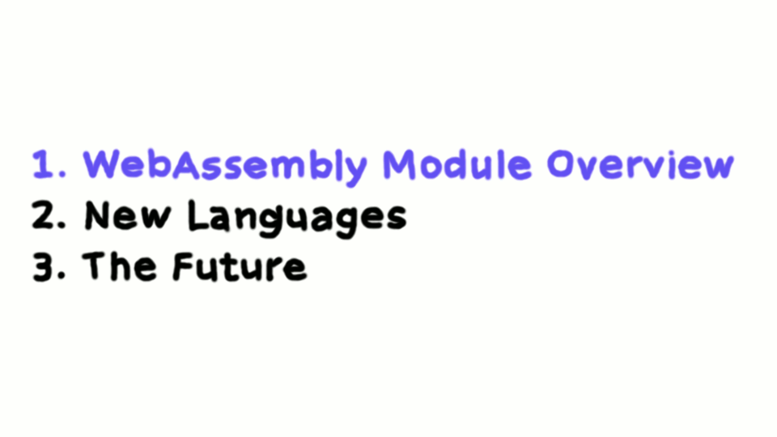
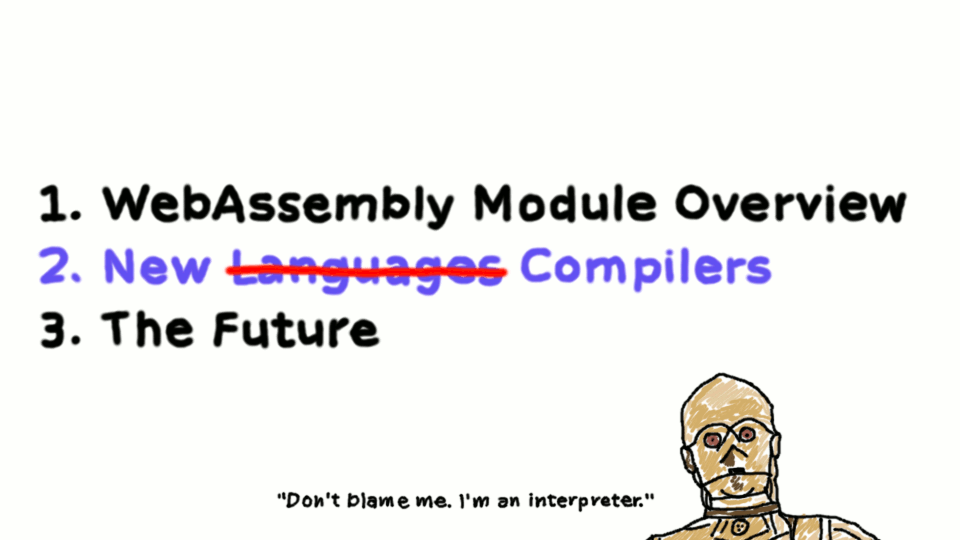
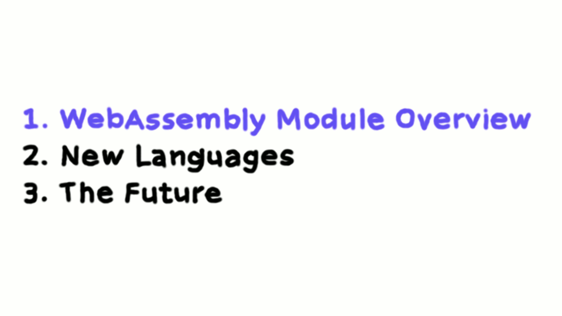
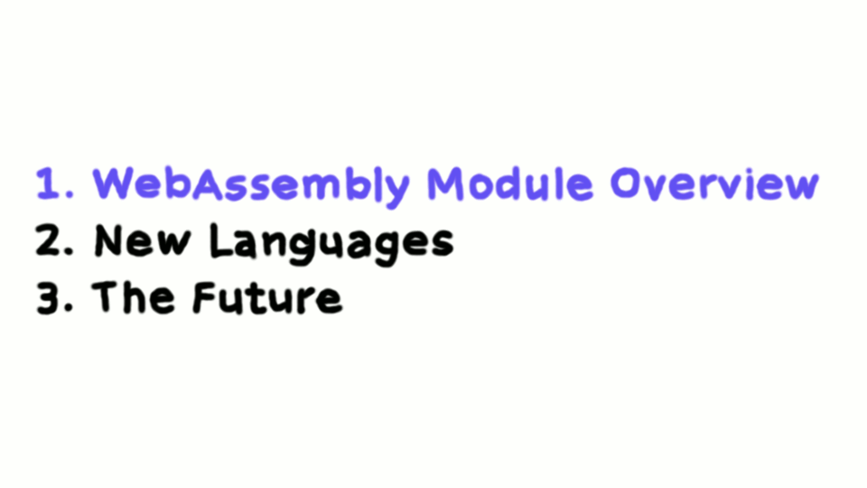

We Want WebAssembly
GOTO Stockholm 2017
Ben Smith
@binjimint
WABT
(Web Assembly Binary Toolkit)
WebAssembly Module Overview
New Languages
The Future
A Cartoon intro To WebAssembly
By Lin Clark


TurboScript
speedy.js
Garbage Collection
Thanks!

 
